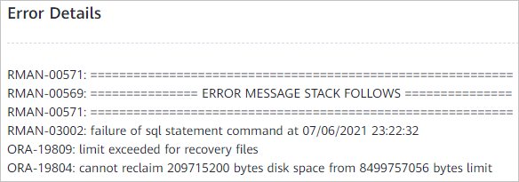

The Oracle database restoration job fails. The following figure shows the error details.

The database host has residual database files, causing the Flash Recovery Area to become full during the restoration. As a result, the restoration job fails.
cd ${ORACLE_BASE}/oradata
rm -rf Residual database file directory
If the database name is fs199, run the following command:
rm -rf FS199